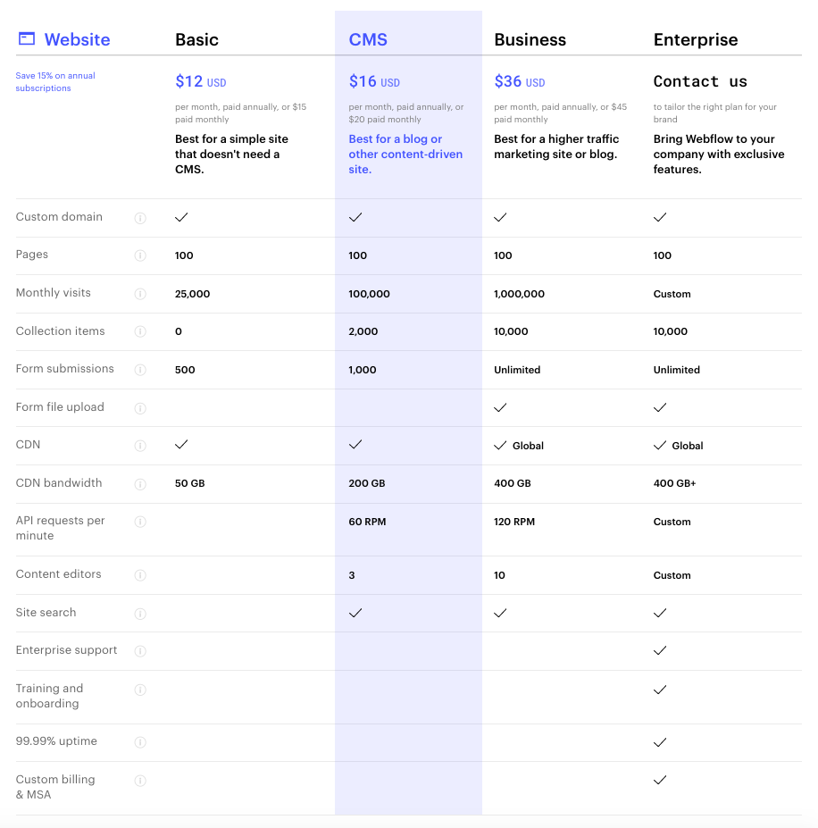
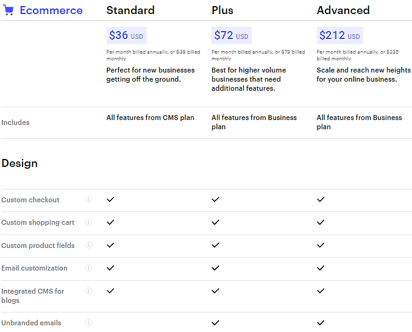

What is webflow ?
In this article, I going to introduce you to one of the best alternatives to WordPress. if you are looking for website builders then this is one of the best places because I am explaining every feature of web flow including its website builder and security, we also discuss the pros and cons of web flow and other features including securities and plans, and pricing.
You know you can save money using webflow promo code
Pros and cons
They offer a brilliant level of customization which helps to make a website without knowing the code. they offer one of the best templates in the world, it also provides dynamic websites If you pay for templates, basically, web-flow offers brilliant templates they also have a good template for eCommerce website they also have redirects 301 which I explain further in this article.
They have a little bit expensive plans has compared to other sites. The bad things about web-flow templates, here site builder is more difficult to customize as compared to another platform like Wix, Weebly. they don’t provide customer care support and services.
TEMPLATES
Firstly I explain to you about web-flow site builder, this is an online platform where you can easily create and customize your website without written any code, they provide you with lots of beautiful modern templates and plugins. They also have CMS which makes customizing much easier than others web site. They also provide 40 free templates which are good things for beginners they can learn about site building using those templates. the good thing about web-flow templates they are responsive they can automatically adapt to different screen-size

CMS
Webflow also has CMS which means you can also design your website by editing the developer codes. you can add, update, delete or publish or publish right from your terminal using REST API.you can also invite teammates and members, and client so they can easily edit and modify your content anytime. if you are a developer then you can also work with it JSON files. they have the best CMS as compare to other sites.

SEO
It provides an advanced SEO option that helps to manage your site rank well on google and bing search engines. on another platform you have to edit/add, metadata, images, text files but web-flow offering automatically generated sitemaps and customizable 301 redirects. which means they automatically upload all your data without using any code.
Security
Backup and security that web-flow takes very seriously, they provide you automatically backup so that you can backup your site before something goes wrong and also provide free SSL certificates which help your visitor to provide full privacy and trust to protect their personal information. They also offer one of the best customer care services web-flow have his owns help center, web flow university where they provide full guides and tutorial about web-flow, they also have a web-flow community forum where user gets together and share their experience and thoughts about the services of web flow because this is the best thing if you have to face any problem you can to someone who also faces this problem earlier and encounter it. The big issue with his customer care service is that we have to directly contact web-flow they don’t have chat, email, and ticket support or phone. They provide 24/7 customer care service, it also gave the reply of your messages in 24 to 48 hours.
Plans
They have startup-friendly plans of hosting but they also provide very good service with it which makes it value for money, it provides the fastest and most scalable hosting without all the hassles of domain setup FTP, Cpanel, and other annoying acronyms. they also provide AWS security which makes your site more secure. they also offer trial services in which you can host your site at the website.io domain with a limit of two projects. Once you ready for the paid subscription you can take any plans according to your need. If you want to cancel your plan, you can cancel at any time but web-flow doesn’t offer any refund. and your plan is active till the next plan cycle. if you cancel your account or you have more than two websites then they automatically downgrade it to a free plan.
Individual Plan
This plan offers only one site hosting, they offer three kinds of individual plans.in the basic plan and the entry-level plan, they don’t offer CMS or editor features.
Individual Plan
This plan is perfect because web-flow has the best e-commerce templates that attract visitors to your site. they have one of the best eCommerce tools or they are making more good. Webflow offers CMS you can easily update your products on your website in a few second you can easily customize your bills and update emails with CMS .they also provides one of the best security.
Conclusion
We already discuss everything features pros and cons, now the point is that it is good for hosting or not if you have to host an eCommerce site then it is brilliant but for another kind of business, it is cost very high which is a waste of money I will not prefer to host from here also they don’t have customer care call or chat services. there is also a lot of sites in the market which much cheaper and better than web-flow like Wix, Weebly, square spaces, and wordpress.